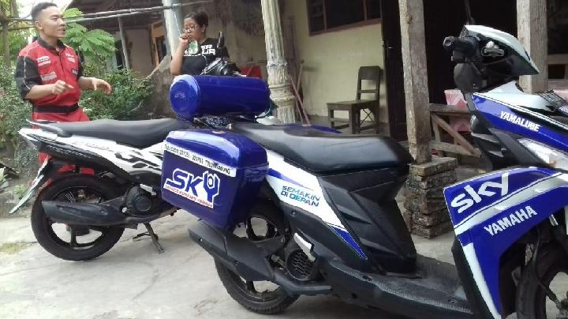
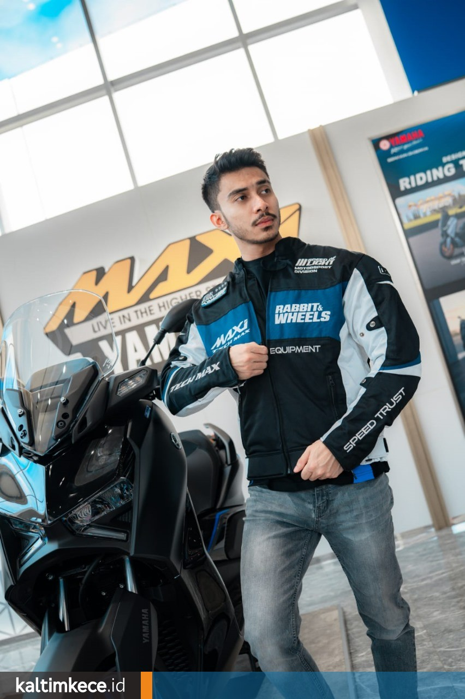

Peluncuran NMAX "TURBO" Guncang Pasar Otomotif
Yamaha kembali membuat gebrakan dengan meluncurkan varian terbaru NMAX yang dilengkapi teknologi "Turbo" YECVT. Sensasi akselerasi instan kini nyata.
BACA SELENGKAPNYA
5 Tips Merawat Motor Matic Agar Awet di Musim Hujan
Musim hujan datang, perhatikan 5 komponen vital ini agar motor matic Anda tidak mogok di jalan. Cek busi hingga filter udara secara berkala.
BACA SELENGKAPNYA
Promo Awal Tahun: Diskon Angsuran hingga 3 Bulan!
Dapatkan penawaran spesial untuk pembelian Aerox 155 Connected. Potongan tenor dan DP ringan berlaku hingga akhir bulan ini.
BACA SELENGKAPNYA
Keseruan Touring Maxi Yamaha Day 2026 di Bromo
Ribuan riders memadati lautan pasir Bromo dalam acara tahunan Maxi Yamaha Day. Intip keseruan camping ground dan api unggun bersama komunitas.
BACA SELENGKAPNYA
Mengenal Fitur Hybrid pada Yamaha Grand Filano
Apa keunggulan teknologi Blue Core Hybrid? Simak cara kerja Electric Power Assist Start yang membuat tarikan awal lebih bertenaga namun irit.
BACA SELENGKAPNYA
Layanan Service Kunjung Yamaha (SKY) Makin Praktis
Motor mogok atau malas antri di bengkel? Teknisi handal kami siap datang ke rumah Anda. Cukup booking melalui aplikasi My Yamaha.
BACA SELENGKAPNYA
Inspirasi Modifikasi Yamaha XSR 155 Gaya Cafe Racer
Ubah tampilan motor retro modern Anda menjadi lebih garang dengan konsep Cafe Racer. Simak part apa saja yang perlu diganti.
BACA SELENGKAPNYA
Pentingnya Menggunakan Gear Lengkap Saat Touring
Jangan abaikan keselamatan. Helm SNI, jaket protektor, dan sepatu riding adalah wajib. Baca panduan safety riding dari YRA.
BACA SELENGKAPNYA
Koleksi Apparel & Aksesoris Resmi Yamaha 2026
Tampil gaya dengan jaket, helm, dan sarung tangan resmi Yamaha. Desain sporty dan bahan berkualitas tinggi untuk kenyamanan berkendara.
BACA SELENGKAPNYA